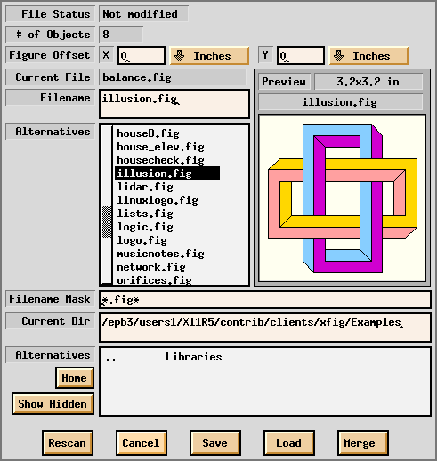
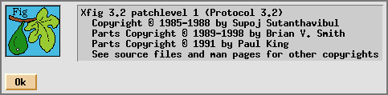

[ English Version
| Japanese Version ]
[ Contents
| Operating Manual
| New Features and Bugs Fixed
| Technical Information
| Authors ]
[ Introduction
| Command Panel
| Drawing Mode Panel
| Editing Mode Panel
| Indicator Panel
| Miscellaneous Panels
| Keyboard Accelerators ]
Command Panel
The following buttons are in the command panel.
 Quit: Exit from xfig
Quit: Exit from xfig
-
Port/Land: Change orientation of canvas to/from Portrait and Landscape
-
New: Delete all object from the canvas
-
Undo: Undo the last operation
-
Redraw: Redraw the canvas
-
Paste: Paste object from cut buffer
-
File: Load/save fig file
-
Export: Export figure in various file formats
-
Print: Print figure to PostScript printer
-
Help: Popup help menu
Exit from xfig. The accelerator Meta-q will also perform
this function. Many window managers have a facility to terminate windows,
and it is also possible to terminate xfig with this.
If the figure has been modified and not saved, a
popup panel will appear to ask the user if he wants to save the figure
first and then quit, quit without saving, or cancel the quit altogether.
If xfig is terminated with signals such as HUP or INT
(for example, by the kill command or an internal error of xfig),
xfig will try to save the figure in the SAVE.fig file.
Change the orientation of the xfig canvas between portrait and landscape.
The orientation will also be used as the default orientation when Exporting
or Printing a figure.
The default orientation may be specified by command
line options. The orientation is automatically changed when loading
a fig file to correspond to the setting in the file.
Delete all objects from the canvas and erase the current file name to make
a new figure. The accelerator Meta-n will also perform this function.
This operation may be undone by Undo.
If you attempt to save the figure without specifying
a file name after this, the File panel will appear
and you will be asked for a file name. If you want to delete all the objects
and retain the file name, you may use accelerator Meta-d. If you
want to delete selected objects, you may use DELETE.
Undo the last operation such as object creation, deletion or modification.
The accelerator Meta-u will also perform this function.
Multi-level undo is not supported. If Undo is clicked twice, it
will revert the state before the first undo.
Redraw the canvas. The accelerators Meta-r and Ctrl-l
will also perform this function.
Paste the object previously copied into the xfig cut buffer (see also
COPY and DELETE)
into the current figure. The accelerator Meta-t will also perform
this function.
 The object will appear on the canvas under or near the mouse
where it may then be moved and placed by pressing mouse button 1.
The object will appear on the canvas under or near the mouse
where it may then be moved and placed by pressing mouse button 1.
This function can be used to copy part of another figure into the figure
being edited. The cut buffer will shared between xfigs if a user
opens two or more xfig windows at the same time, and it is possible
to copy objects between those xfig windows. If you want to copy an
entire figure from another file, you can merge the file
using File panel.
Normally, the ``.xfig'' file in user's home directory is used
as the cut buffer.
The File button provides the facility to load/save fig files.
Use Export
if you want to output figure with a format other than a Fig file, and use
IMPORTING PICTURE OBJECTS
if you want to insert image files into the figure.
If the File button on the command panel is clicked by mouse button
3 (`Save shortcut'), a save is performed without poping up the File
panel. This is very useful when saving figure to the same file after editing
the figure. The accelerator Meta-s will also perform this function.
Clicking the File button with mouse button 1 (`Popup') will pop
up the File panel. The accelerator Meta-f will also perform this
function.

-
Current Filename
-
The name of the current file is displayed here, and a save to the file
will be performed if the Save button is clicked without entering
a file name in the Filename field, or if the File button on
the command panel is clicked with mouse button 3 (`Save shortcut').
When the file has been loaded or saved, Current Filename will
be updated to the name of the file.
-
Filename
-
Specify the name of file to be loaded or saved. If this field is empty,
the file indicated at Current Filename will be accessed.
The file name in the Filename field may be changed by clicking
a file name in File Alternatives list, or by typing the file name
on the keyboard . If return is typed after the file name is entered,
the file will be loaded as if the Load button was clicked.
-
(File) Alternatives
-
The files in the current directory matching the pattern specified by Filename
Mask are displayed here, and users may select a file name from the list.
Clicking a file name in this list with mouse button 1 will copy the
file name to Filename field. Double-clicking a file name in this list
with mouse button 1 will load the file as if the Load button was
clicked.
-
Filename Mask
-
Only the files which match this pattern will be listed in the File Alternatives
list. The pattern is similar to the one which is used in the UNIX shell,
so it is possible to use meta-characters like ``*'' or ``?''.
Typing return in this field will cause a rescan of the current
directory as if the Rescan button was clicked. The initial value
of this string is ``*.fig*'', which will show all Fig files
including compressed files and backups,
but it may be changed by the Fig*file_panel*mask*string
resource if necessary.
-
Current Directory
-
This shows the current directory, and files in the directory will be displayed
in the File Alternatives list.
The directory name in the Current Directory field may be changed
by clicking a directory name in Directory Alternatives list, or
by typing the directory name on the keyboard. If return is typed
after the directory name is entered, the directory will scanned as if the
Rescan button was clicked and the contents of File Alternatives
list will be updated.
-
(Directory) Alternatives
-
List of directories in the current directory is displayed here, and clicking
any item in this list with mouse button 1 will cause a move to the directory.
Normally, hidden directories are not displayed here, but that may
be toggled with the Show Hidden button.
``..'' indicates the parent directory. Moving to the parent
directory may also be performed by clicking mouse button 3 on the File
Alternatives list or the Directory Alternatives list.
-
Load/Merge figure offset
-
Specify amounts of offset the figure should be shifted when loaded or merged.
The figure will be shifted to right or down by the amounts specified here.
It is also possible to shift figure to left or up by specifying negative
values here. Unit of the amounts may be Inches, Centimeters,
or Fig Units (1/1200 inch in version 3.x).
-
Home
-
Clicking this button will move to the home directory of the user.
-
Show Hidden
-
This button controls whether hidden directories (directories whose
name starts with ``.'') are displayed or not. Clicking this button
will toggle the state. By default, hidden directories are not displayed.
-
Rescan
-
Clicking this button will scan the files in the current directory and update
the File Alternatives list with those files whose names match the
Filename Mask. The accelerator Meta-r will also perform
this function.
-
Cancel
-
Clicking this button will close the File panel. The accelerator Meta-c
will also perform this function.
-
Save
-
Clicking this button will save the figure to the file specified in the
Filename field if any, or the file name in Current Filename.
The accelerator Meta-s will also perform this function. Clicking
File button with mouse button 3 (`Save shortcut') will perform the
same action without popping up the File panel.
When trying to save to an existing file other than Current Filename,
a popup panel will appear and the user will be asked if he wants to save
over that file.
Also, Current Filename is updated to reflect
the new file name.
Before saving the file, the original file (if any) will be automatically
renamed to the same name but with the suffix ``.bak'' to leave it as a
backup file.
-
Load
-
Clicking this button will load the file specified by the Filename field.
The accelerator Meta-l will also perform this function.
Before loading the file, the figure on the canvas is cleared. If the
figure on the canvas has been modified and not saved, a popup panel will
appear and the user will be asked to save the current figure, discard it
and load the new file or cancel the load of the new file altogether.
The figure will be shifted by the amounts specified by Load/Merge
figure offset.
xfig can also read files compressed by compress
or gzip
(files which have suffix .Z, .z, or .gz). Before
loading a compressed file, the file will be uncompressed by uncompress
or gunzip.
A newer version of xfig can always load Fig files created
by older version of xfig, but the reverse is not true. When loading
files of older format, xfig will notify the user in a popup message
panel and will convert the file to the current version. There is no way
to save a Fig file in an older version format.
-
Merge
-
Clicking this button will read the figure from the file specified by the
Filename field and merge it with the figure on the canvas. The accelerator
Meta-r will also perform this function.
As in Load, the figure will be shifted at the amounts specified
by Load/Merge figure offset.
The Export button provides a facility to output the figure in
various format such as PostScript, GIF, JPEG, HP-GL, etc. to a file.
This is useful when you want to read figures by other applications
(LaTeX or FrameMaker, for example).
Use Print if you want to print the
figure to a PostScript printer.
If the Export button on the command panel is clicked by mouse
button 3 (`Export shortcut'), export will be performed without popping
up the Export panel.
Clicking the Export button with mouse button 1 (`Popup') will
popup the Export panel. The accelerator Meta-e will also perform this
function.
![[Export Panel]](images/export-panel.gif)
-
Magnification
-
Specify the magnification when exporting figure in percent of full size (%).
The default is 100% and may be set by the Fig.magnification resource.
-
Fit to Page
-
Clicking this button will set the Magnification automatically so that the
figure size will just fill current Paper Size with at least 1/2
inch margin all around. This is effective only when PostScript is
selected as Language.
-
Orientation
-
Specify the orientation of the output as Landscape (horizontal)
or Portrait (vertical). The default orientation is same as the
orientation of the canvas which may changed by Port/Land.
-
Justification
-
Specify if the figure should be Flush Left or Centered on the
paper of the size selected by Paper Size. This is effective only if
PostScript is selected at Language.
-
Paper Size
-
Specify the size of the paper. See description in Print
Panel about available paper sizes. This is effective only if PostScript
is selected at Language.
-
Pages
-
If Multiple is selected, the figure will be split into multiple
pages if the figure is larger than Paper Size. If Single
is selected, this facility will not used. This is effective only if
PostScript is selected at Language.
-
Export Offset
-
When exporting figure, the figure will be shifted to the right or down by the
amount specified here.
Use negative numbers to shift it left and/or up.
The unit of the amounts may be selected from
Inches, Centimeters, and Fig Units(1/1200 inch in version 3.x).
-
Language
-
Specify the format (language) to be generated as output. The default is
Encapsulated PostScript, but may be changed with the resource
Fig.exportLanguage.
The following formats are available:
 LaTeX picture environment
LaTeX picture environment
-
PicTeX macros
-
IBMGL (HP-GL)
-
Encapsulated PostScript (EPSF)
-
PostScript
-
Combined PostScript/LaTeX
-
Textyl
-
TPIC
-
PIC
-
ACAD (AutoCAD slide format, SLD)
-
MF (MetaFont)
-
PCX paintbrush format
-
PNG Portable Network Graphics
-
GIF
-
JPEG
-
PBM Portable Bitmap package
-
TIFF Tag Image File Format
-
Tk (Tck/Tk toolkit)
-
XBM X11 Bitmap
-
XPM X11 Pixmap
-
PPM (Portable Pixmap)
As a variation of the LaTeX format, epic, eepic and eepicemu
macros are also available. It is also possible to output the text part of the
figure in LaTeX and the graphics part in PostScript using Combined PostScript/LaTeX.
This is especially useful when complex numerical formulas are included in
the figure (see also TEXT FLAGS).
Not all of the features in xfig are supported by all export languages.
For example, imported pictures are not supported for IBMGL export.
The PostScript export language supports all features
of xfig and a fairly high quality output will be generated.
To export the figure in a bitmap format such as GIF or JPEG, you must have the
GhostScript and
netpbm
packages on your system.
-
Transparent Color
-
For GIF export, it is possible to specify one of the colors as ``transparent''.
When displaying the figure with GIF viewers that support Transparent GIF
(such as Netscape Navigator, for
example), the color will not appear but the background of the viewer will show
through in place of the color. This menu button will only appear for GIF export.
The default is None.
-
Default Filename
-
Output will be written to this file if Output Filename is empty.
This file name is the figure name plus an extension that reflects the output
format at the default, and it will be changed to the specified file name if
export has been performed by specifying a file name in Output Filename.
-
Output Filename
-
Specify the file name the output should be written to. If this field is
empty, the file name in the Default Filename field will be used.
The file name in the Output Filename field may be changed by selecting
a file name in the File Alternatives list, or typing the file name from
keyboard directly. If return is typed after file name is entered,
export to the file will be performed as if the Export button was clicked.
-
(File) Alternatives
-
The list of files in the current directory (only files matching the pattern specified
by Filename Mask) are displayed, and users may select a file for output
from the list.
Clicking a file name in this list with mouse button 1 will copy the file name
to the Output Filename field. Double-clicking a file name in this list
with mouse button 1 will cause exporting to the file as if Export
button was clicked. Note that exporting to the existing file will over-write
the old contents of the file.
-
Filename Mask
-
Only the files matching this pattern will be put in the File
Alternatives list. The pattern is similar to the one used
by the UNIX shell, and it is possible to use meta-characters like ``*''
or ``?''.
Typing return in this field will cause rescan of the current directory
as if Rescan button was clicked. The initial value of this string
is ``*ps'', but it may changed by the Fig*export_panel*mask*string
resource if necessary.
-
Current Directory
-
This shows the current directory, and files in the directory will be displayed
in the File Alternatives list.
The directory name in the Current Directory field may be changed
by clicking a directory name in Directory Alternatives list, or by
typing the directory name from keyboard directly. If return is typed
after directory name is entered, the directory will scanned as if Rescan
button was clicked and the contents of File Alternatives list will be updated.
-
(Directory) Alternatives
-
The list of directories in the current directory is displayed here, and clicking
any item in this list with mouse button 1 will cause a move to the directory.
Normally, hidden directories are not displayed here, but this may be
toggled by Show Hidden button.
``..'' indicates the parent directory. Moving to the parent directory
may also be performed by clicking mouse button 3 on the File Alternatives
list or the Directory Alternatives list.
-
Home
-
Clicking this button will move to the home directory of the user.
-
Show Hidden
-
This button controls if hidden directories (directories whose names start
with ``.'') should be displayed or not. Clicking this button will
toggle the state. Normally, hidden directories are not displayed.
-
Rescan
-
Clicking this button will scan files in the current directory
and update the File Alternatives list. The accelerator Meta-r
will also perform this function.
-
Cancel
-
Clicking this button will close the Export panel. The accelerator Meta-c
will also perform this function.
-
Export
-
Clicking this button will export to the file specified by Output
Filename field if any, or the file in Default Filename.
The accelerator Meta-e will also perform this function.
When trying to export to an existing file other than Default Filename,
popup panel will appear and the user will asked to confirm the export operation.
If the figure is exported to a file other than Default Filename,
then Default Filename will be set to the actual export file name.
The Print button provides the facility to print figures to PostScript
printers. Use Export if you want to store the output to a file.
If the Print button on the command panel is clicked by mouse
button 3 (`Print shortcut'), Print to Printer will be performed without
popping up the Print panel. If the Print button is clicked while the SHIFT key
is down, Print to Batch will be performed.
Clicking the Print button with mouse button 1 (`Popup') will
popup Print panel. The accelerator Meta-p will also perform this
function.
![[Print Panel]](images/print-panel.gif)
-
Magnification
-
Specify the magnification when printing figure in percent of full size (%).
The default is 100% and may be set by the Fig.magnification resource.
-
Fit to Page
-
Clicking this button will set the Magnification automatically so that
figure size will just fill current Paper Size with at least 1/2
inch margin all around.
-
Orientation
-
Specify the orientation of the output as Landscape (horizontal)
or Portrait (vertical). The default orientation is same as the
orientation of the canvas which may changed by Port/Land.
-
Justification
-
Specify if the figure should be Flush Left or Centered on the
paper of size selected by Paper Size.
-
Paper Size
-
Specify the size of the paper.
The following paper sizes are available:
-
Letter (8.5in x 11in)
-
Legal (8.5in x 14in)
-
Tabloid (17in x 11in)
-
ANSI A (8.5in x 11in)
-
ANSI B (11in x 17in)
-
ANSI C (17in x 22in)
-
ANSI D (22in x 34in)
-
ANSI E (34in x 44in)
-
ISO A4 (21cm x 29.7cm)
-
ISO A3 (29.7cm x 42cm)
-
ISO A2 (42cm x 59.4cm)
-
ISO A1 (59.4cm x 84cm)
-
ISO A0 (84cm x 118.8cm)
-
JIS B5 (18.2cm x 25.7cm)
-
Pages
-
If Multiple is selected here, the figure will be split into multiple
pages if the size of the figure is larger than Paper Size. It allows
the user to output a figure larger than paper size by pasting
those papers together (to make it easier, xfig generates output
so that the parts of the figure will be overlap).
If Single is selected here, this facility will not be used;
any part of the figure outside the paper boundary will be clipped.
-
PostScript Printer
-
Specify the printer name output should be directed to. If this field is empty,
output will be directed to the default printer.
The default value is specified by the resource Fig*printer*string
or the environment variable $PRINTER.
-
Print Job Params
-
The string specified here will be passed as command-line options when executing
lpr (lp on System V system). If %f is included in the string,
(it may appear more than once) it will be replaced by the name of the figure.
The default is empty, but it may be specified by Fig*job_params*string
resource.
-
Figures in batch
-
This indicator shows how many figures have been put in the batch file
for printing. Figures may be printed into the batch file by Print FIGURE
to Batch, and those figures may be sent to the printer as one print job
by clicking on Print BATCH to Printer.
-
Dismiss
-
Clicking this button will close the Print panel. The accelerator Meta-c
will also perform this function.
-
Print FIGURE/BATCH to Printer
-
Clicking this button will spool the figures in the batch file
if any, or the current figure if none, to the printer.
The accelerator Meta-p will also perform this function.
The label of this button will be Print BATCH to Printer if there
are any figures in the batch file, or Print FIGURE to Printer
if there are none.
When printing to the printer, xfig will first convert the figure
to PostScript with fig2dev
program, and pass the result to lpr (lp on System V system).
When executing lpr (or lp), the printer name specified by
PostScript Printer field and options specified by Print Job Params
will be passed as command-line options.
-
Print FIGURE to Batch
-
Clicking this button will append the current figure to the batch file.
The accelerator Meta-b will also perform this function.
The figures stored in the batch file will be printed to the printer
when Print BATCH to Printer is clicked later. You can use this facility
when you want to send some figures to the printer at one time.
-
Clear Batch
-
Clicking this button will erase the accumulated figures in the batch
file. The accelerator Meta-x will also perform this function.
The figures are automatically deleted from the batch file when
Print BATCH to Printer is clicked.
The Help button pulls down a menu to view various help information.
-
Xfig Reference
-
Launch an external HTML browser
(netscape is the default)
specified by the Fig.browser resource to view the
XFIG Users Manual, xfig reference manual in HTML.
-
How-to Guide
- Launch an external PDF viewer (acroread is the default)
specified by the Fig.pdfviewer resource to view the
Xfig How-to Guide written by Peter Hiscocks.
-
Man Pages
- Launch an external PDF viewer to view the xfig man pages in PDF.
However, the Xfig Reference above is much better.
-
About Xfig
- Popup a window showing the xfig version and copyright information:

Goto TOP
written by us